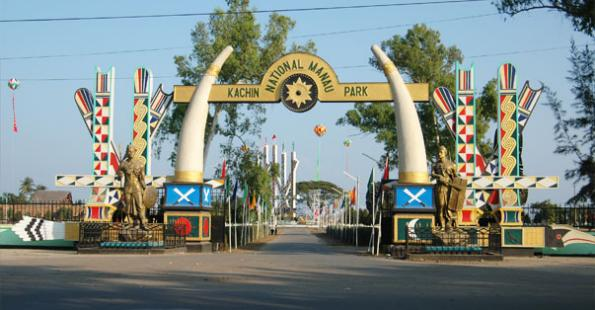
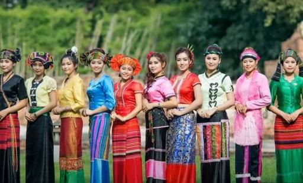
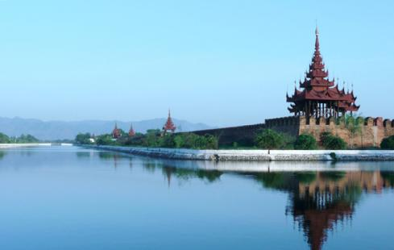
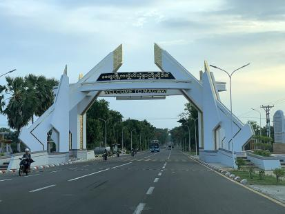
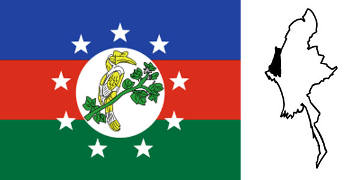
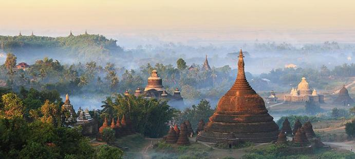
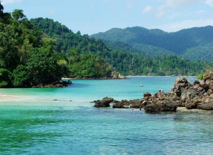
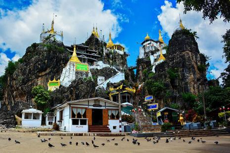

14 Regions and States of Myanmar
Click on a region/state in the map below to view its details:

Kachin State

Area & Population
The Kachin State has common boundaries with the People's
Republic of China in the east and north-east and India on the west.
It adjoins Sagaing Division on the west and Shan State on the south.
Its area is 34,379 square miles and its population is 903,982,
comprising 18 Townships, 699 Wards and Village-Tracts, inhabited by
Kachins, Shans, Myanmars, Jingphaws, Lisus, Atsis, Lashis, Rawans, Marus, Kadus and Kanans.
More about Kachin State | Back
to Map
Sagaing Region

Area & Population
Sagaing Region is situated in the north-western part of Myanmar.
It is bounded on the north by Kachin State and Chin State,
on the east by Shan State, on the south by Mandalay Region and Magway Region, and on the west by India.
Its area is 93,527 square kilometers and its population is 5,325,237,
comprising 34 Townships, 1,651 Wards and Village-Tracts, inhabited by Myanmar, Chins, Shans, Kachins, Nagas
and Gurkhas.
More about Sagaing Region | Back to Map
Shan State

Area & Population
Shan State is the largest of the 14 administrative divisions of Myanmar.
It shares international borders with China, Laos, and Thailand.
The state covers an area of approximately 155,800 square kilometers and has a population of
around 5.8 million people, comprising various ethnic groups including the Shan, Pa-O, Lahu, Akha, and
others.
Shan State is known for its diverse culture, scenic landscapes, and significant agricultural activities,
particularly in the cultivation of tea, coffee, and various fruits. The state is also home to several
important
historical and cultural sites, including ancient temples and traditional Shan villages.
More about Shan State | Back to
Map
Mandalay Region

Area & Population
Mandalay Region is located in the central part of Myanmar. It is bordered by Sagaing
Region to the northwest, Shan State to the east, Kayah State to the southeast,
Bago Region to the south, and Magway Region to the west. The region covers
an area of approximately 61,000 square kilometers and has a population of around
6 million people, comprising various ethnic groups including the Bamar, Shan, Chin, and others.
Mandalay Region is known for its rich cultural heritage, historical sites, and economic activities,
particularly in agriculture, trade, and tourism. The region is home to the city of Mandalay,
which is the second-largest city in Myanmar and a major cultural and economic hub.
More about MAndalay Region | Back to Map
Magway Region

Area & Population
Magway Region lies in central Myanmar along the middle Ayeyarwady valley.
It covers roughly 44,800 km² and has a population of about 3.9 million.
The region's economy is dominated by agriculture — especially sesame, groundnuts,
beans, and pulses — and by oil extraction around Chauk and Mann. Major towns
include Magway (the regional capital), Pakokku, Minbu, and Yenangyaung.
The Ayeyarwady River and its irrigation networks are central to farming and inland transport.
More about Magway Region | Back to Map
Chin State

Area & Population
Chin State is located in the western part of Myanmar, sharing borders with India and Bangladesh.
It covers an area of approximately 36,000 square kilometers and has a population of around 478,000 people,
comprising various ethnic groups including the Chin, Mizo, and others.
The state is known for its mountainous terrain, rich cultural heritage, and diverse ethnic communities.
Chin State is one of the least developed regions in Myanmar, with limited infrastructure and economic
activities.
The economy is primarily based on agriculture, with many residents engaged in subsistence farming.
Despite its challenges, Chin State is renowned for its natural beauty, traditional festivals, and warm
hospitality of its people.
More about Chin State | Back
to Map
Rakhine State

Area & Population
Rakhine State is located in the western part of Myanmar, bordered by the Bay of Bengal to the west.
It covers an area of approximately 36,778 square kilometers and has a population of around 3.2 million
people,
comprising various ethnic groups including the Rakhine, Rohingya, and others.
The state is known for its rich cultural heritage, historical sites, and diverse ethnic communities.
Rakhine State has faced significant challenges, including ethnic tensions and humanitarian issues.
The economy is primarily based on agriculture, fishing, and trade, with Sittwe as its capital and main port
city.
Despite its challenges, Rakhine State is renowned for its natural beauty, ancient temples, and vibrant
cultural traditions.
More about Rakhine State | Back to Map
Ayeyarwady Region
Area & Population
Ayeyarwady Region is located in the delta area of Myanmar, where the Ayeyarwady River meets the Andaman Sea.
It covers an area of approximately 35,140 square kilometers and has a population of around 6.2 million
people,
comprising various ethnic groups including the Bamar, Karen, Rakhine, and others.
The region is known for its fertile agricultural land, extensive river systems, and rich biodiversity.
Ayeyarwady Region is a major rice-producing area and plays a crucial role in Myanmar's economy.
The region is also prone to natural disasters such as cyclones and flooding due to its low-lying geography.
Despite these challenges, Ayeyarwady Region is renowned for its vibrant culture, traditional festivals, and
warm hospitality of its people.
More about Ayeyarwaddy |Back to Map
Yangon Region
Area & Population
Yangon Region is located in the southern part of Myanmar, along the coast of the Andaman Sea.
It covers an area of approximately 9,500 square kilometers and has a population of around 7.4 million people,
comprising various ethnic groups including the Bamar, Chinese, Indian, and others.
The region is known for its vibrant economy, diverse culture, and historical significance.
Yangon, the largest city in Myanmar and the former capital, is located in this region and serves as the
economic and cultural hub of the country.
Yangon Region is a major center for trade, commerce, and tourism, with a bustling port and numerous
attractions such as the Shwedagon Pagoda.
More about Yangon Region | Back to Map
Bago Region

Area & Population
Bago Region is located in the southern central part of Myanmar, bordered by Magway Region, Mandalay Region, Kayin State, Mon State, and Yangon Region.
It covers an area of approximately 39,400 square kilometers and has a population of around 4.8 million people.
The region is known for its fertile plains, rice cultivation, and historical sites, including the ancient city of Bago.
Bago Region is also home to diverse ethnic groups such as the Bamar, Karen, and Mon.
More about Bago Region | Back to Map
Tanintharyi Region

Area & Population
Tanintharyi Region is located in the southernmost part of Myanmar, bordered by the Andaman Sea to the west and Thailand to the east.
It covers an area of approximately 43,344 square kilometers and has a population of around 1.4 million people.
The region is known for its long coastline, beautiful beaches, and rich biodiversity, including the Myeik Archipelago.
Tanintharyi Region is also home to diverse ethnic groups such as the Bamar, Karen, and Mon.
More about Tanintharyi-region | Back to Map
Kayin State

Area & Population
Kayin State is located in southeastern Myanmar, sharing a border with Thailand to the east.
It covers an area of approximately 30,383 square kilometers and has a population of around 1.6 million people.
The state is home to the Karen (Kayin) ethnic group and other minorities.
Kayin State is known for its scenic mountains, caves, and cultural diversity.
The economy is primarily based on agriculture, forestry, and cross-border trade.
More about Kayin State | Back to Map
Kayah State

Area & Population
Kayah State is located in eastern Myanmar, bordered by Shan State to the north and east, and Kayin State to the south.
It covers an area of approximately 11,670 square kilometers and has a population of around 286,000 people.
The state is home to the Kayah (Karenni) ethnic group and other minorities.
Kayah State is known for its picturesque landscapes, traditional villages, and rich cultural heritage.
The economy is primarily based on agriculture, handicrafts, and small-scale trade.
| Back to Map
Mon State
Area & Population
Mon State is located in the southern part of Myanmar, bordered by the Andaman Sea to the west and Kayin State to the north.
It covers an area of approximately 12,296 square kilometers and has a population of around 2 million people.
The state is home to the Mon ethnic group as well as Bamar, Kayin, and other minorities.
Mon State is known for its beautiful beaches, ancient pagodas, and vibrant cultural traditions.
The economy is primarily based on agriculture, fishing, and rubber production.
More about Mon State | Back to Map
↑ Back to Top